水災無情
人間有愛
洪水退了，滿屋黃泥，光給錢夠不夠？

先別急著下結論，讀完再說說你的想法～
這一篇講2014年底馬來西亞東海岸的大水災：志工連夜進災區，第一次在馬來西亞推動「以工代賑」，帶著受災鄉親一起清掃家園。
你也會看到全國上千場募款、一張張現值卡，和兩位在水災中挺身而出的人。
下面是原書的節錄，紅色底線是我們替你標出的轉折點。
讀之前：家被洪水淹過，你覺得受災鄉親最需要什麼？
四輪驅動車進災區
東海岸淹水了，志工怎樣第一時間出發？閱讀引導
馬來西亞半島東海岸因為東北季風導致連續豪雨，造成嚴重水患。
「馬來西亞水患災區廣大，需要『大馬連心』，會合人人愛心力量，啟動救災，『人間菩薩』不是口號，必須身體力行，以同理心救助苦難。」
證嚴上人於志工早會開示・p.233–234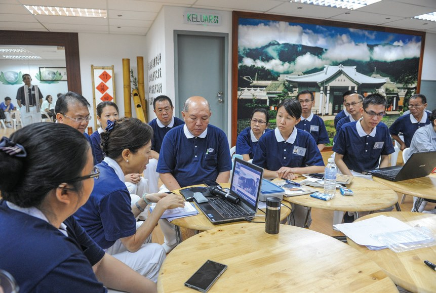
同日，雪隆志工乘坐四輪驅動車前往重災區吉蘭丹州話望生縣、彭亨州馬蘭縣、淡馬魯縣、立卑縣勘災、造冊、發放物資……

直接開進重災區！
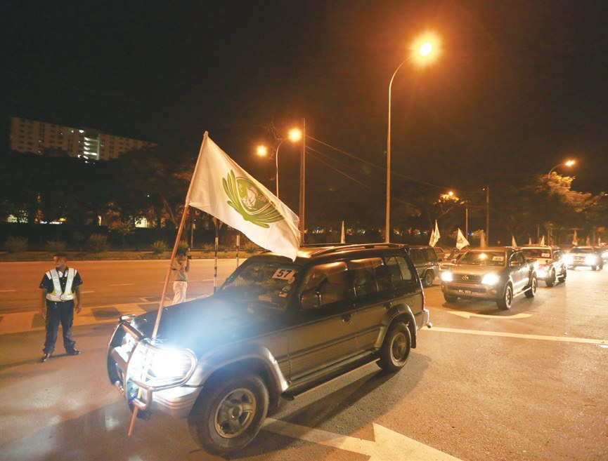
靜思精舍師父與志工趕製八百五十箱，近一萬公斤的香積飯，於12月30日運抵桃園航空倉儲，並由馬來西亞航空運送至災區。
由於同年馬航MH370班機失聯，慈濟曾經參與膚慰家屬的工作，因此這一次東海岸大水災，馬航免費協助從臺灣運送三百箱香積飯到馬來西亞……

這次馬航來幫忙了！
千人清掃家園
雪隆慈濟從沒做過以工代賑，第一次怎麼做？閱讀引導
安排災民投入清掃災區和家園，除了可以恢復當地環境，災民在服務當天也可獲得代賑金報酬，以此取代直接救濟的一種扶持方式。

還能領到工資？
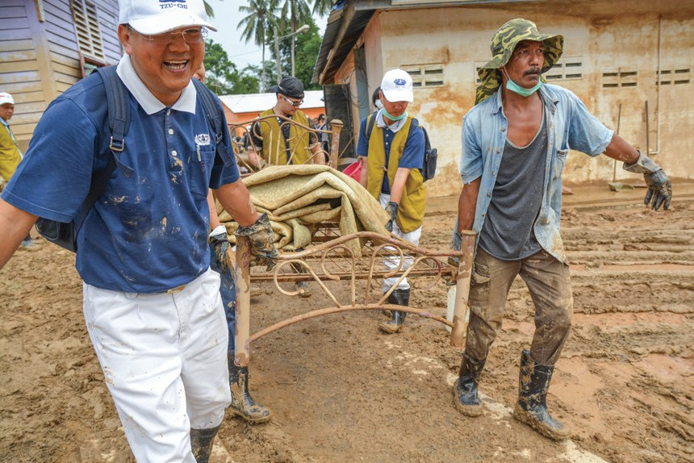
鮮少遇上大災難的雪隆慈濟人，對於推動以工代賑缺乏實際經驗，身在臺灣的前馬六甲執行長劉濟雨向證嚴上人請纓，希望能夠前往協助……
隔日，雪隆慈濟第一次在馬來西亞進行「以工代賑」，近二千位慈濟志工在重災區淡馬魯、瓜拉吉撓及立卑，帶動居民清掃家園。
一起下去掃！
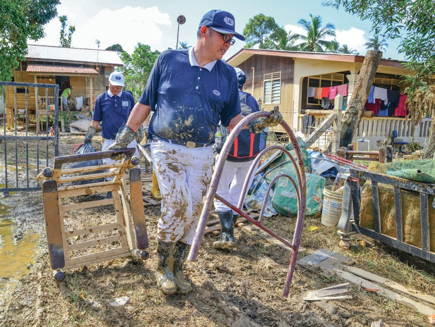
第一次在瓜拉吉撓的以工代賑，原先預計超過一千人參與，但卻因為災民質疑慈濟是為了向他們收費而來打掃，故只來了五百多人……

掃完要收錢……
打掃結束後，如數發放的代賑金更證實了慈濟的誠信。因此一傳十，十傳百，第二日的參與居民便達到了七百多人。
「我要請大家給慈濟志工一個掌聲，他們從老遠過來幫助我們，還給我們工資，我希望我們以後要自立、懂得互相幫助。」
瓜拉吉撓鎮長馬慕阿都拉帶動鄉親・p.238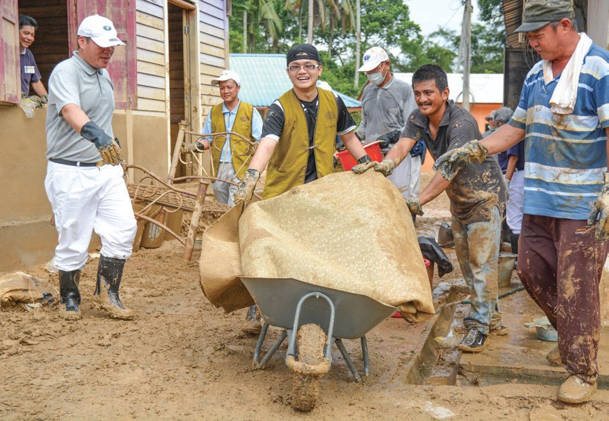
雖然村長已盡力號召，但村民大都無法置信，所以並未赴約。
後來在志工挨家挨戶邀約下，才慢慢有民眾加入，女眾協助清掃屋內外，男眾則合力搬除廢棄的家具物品，集中在街道旁，等待卡車運走。

村民慢慢加入了！
猜一猜閱讀引導
彭亨州的以工代賑做了一個多星期，一共投入了多少人次？
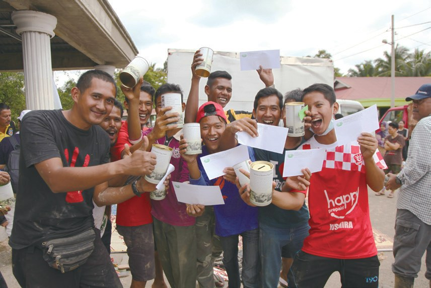
一千二百多場募款
全國的人怎樣一起幫忙？祝福金又怎樣安全地送到受災鄉親手上？閱讀引導
雪隆志工總動員，捧著愛心箱及水災海報，走上街頭，向民眾募一分善念與愛心。
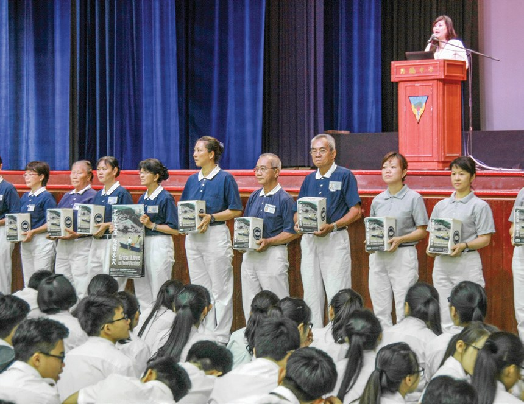
「在同一片國土上，我們是幸運的一群……我們是不是可以分享我們的幸運與幸福，依能力幫助在東海岸的同胞？」
黃雪萊校長在集會中說・p.241中風坐輪椅的病友及癌症病友為善不落人後，當他們知道慈濟人醫會醫師及護理人員在八打靈再也的萬達商場募款，也前來參與募款活動。
也來幫忙募款！
此次水災，總計中南東馬的募款場次達1,206場，共動員8,320人次的志工。
2013年菲律賓海燕風災援助時，證嚴上人即提出以「現值卡」取代現金發放，讓災民直接到指定的銀行去領取祝福金的現款，除了較為安全外，卡片也能作為紀念。
安全又能留作紀念。
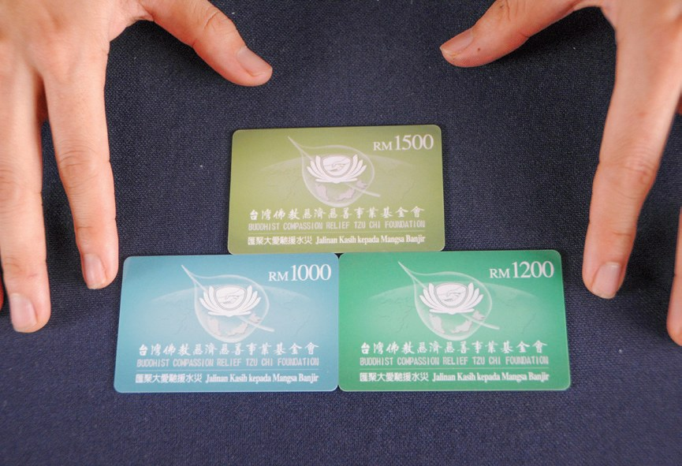
雪隆分會於1月31日至2月8日，分別在彭亨州瓜拉立卑、而連突、百樂、文德甲、瓜拉吉撓及淡馬魯，一共舉辦了七場的祝福金發放儀式。
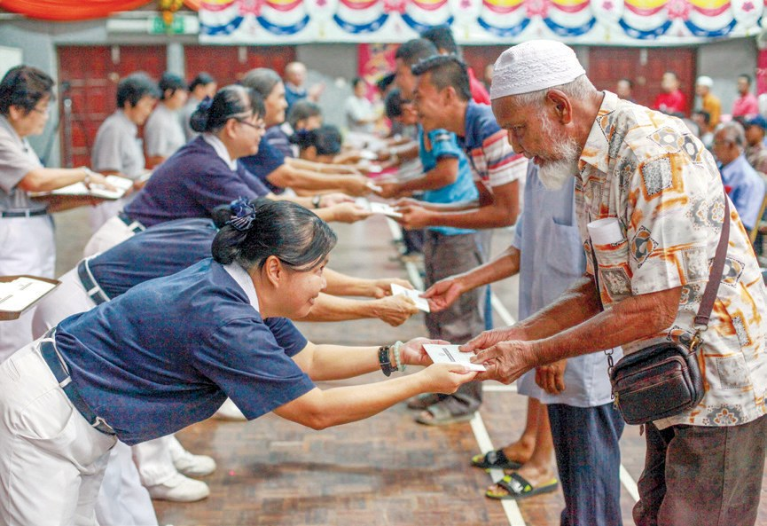
唯一走進來的團體
東海岸還沒恢復，沙巴、砂拉越也爆發水患。閱讀引導
「水災最嚴重時，水位幾乎高過了所有的房屋……有居民因為來不及逃離家園，而爬到屋頂或是樹上自救。」
當地村長表示・p.243–244受災地區地形崎嶇，且所到之處都是泥濘，單薄的竹橋已經破損，加上艷陽高掛於天空，都再再考驗著志工們的毅力……
「謝謝你們來看我們，你們的造訪，給了我們很大的支持。」
災民阿米占告訴志工・p.244阿米占告訴志工，慈濟是災後唯一一個走入當地關懷的團體。
走進來的團體！
「去年火災時，你們不只幫助我們，也給我們重新振作的信心。所以，這次的水災，你們的到來，讓我們非常的感動！」
經歷火災又遇水災的哈密達說・p.245- 7,981戶急難慰問金p.245
- 6,724戶祝福金（現值卡）p.245
- 718人次義診p.245
心不難，事就不難
一位涉水進災區的志工，一位不肯拿工資的馬來婦女。閱讀引導
2014年12月，大水淹進立卑時，陳惜嬌一個人駕車來到災區，車子被水困住，無法前行，陳惜嬌涉水而過。
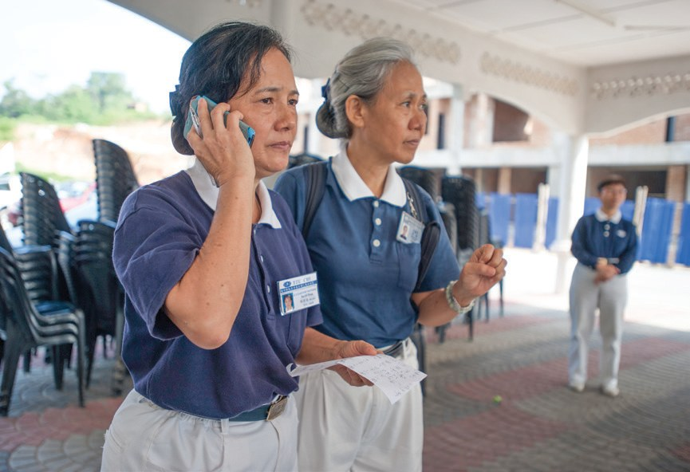
「第一次承擔這麼大型的祝福金發放，心裡戰戰兢兢，但一想到災民在等著這筆錢，我就覺得一切辛苦都不算什麼了。」
陳惜嬌表示・p.246還是承擔下來了。
在慈濟發動以工代賑活動時，她即刻來參與，但卻堅持不拿代賑金。
她從志工口中得知那些被丟棄的瓶瓶罐罐和垃圾，會阻塞水流，可能是導致淹水的因素。她因此意識到做環保的重要性，並呼籲鄉親們共同響應。
「我們一家人每天投竹筒，想到這些錢可以去幫助其他人，心裡就很快樂。」
露采尼說・p.247每天投竹筒幫別人！
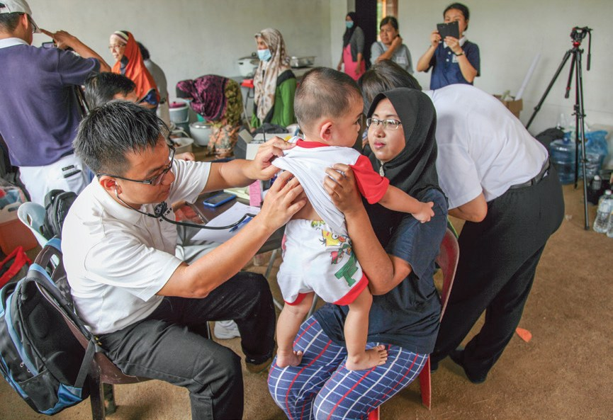
光是錢給他們夠不夠呢？其實錢不是萬能，要是周圍都是泥濘不堪的垃圾也無法生活，生機也無法復甦……
上人感恩・p.248停一停：誰讓你記住了？閱讀引導
選一位你印象最深的人。沒有標準答案。
有人涉水進災區，有人不肯拿工資，有人帶全校捐款。哪一位讓你最有感覺？

一起回頭看看吧～
回望
依本章原文整理，每一條都標了原書頁碼。閱讀引導
背後原因
為什麼要以工代賑

小川直接發錢、發物資，不就好了嗎？
- 滿地淤泥
周圍都是泥濘不堪的垃圾，生機無法復甦。p.248
- 需要工作
因為有工作才能維生，所以他們很需要工作。p.248
- 以工代賑
受災鄉親清掃家園，同時獲得代賑金報酬。p.235
後續發展
這場水災的援助

小禾從勘災到發放，志工做了多久？
- 2014.12
東海岸水患，志工乘四輪驅動車勘災。p.233–234
- 2015.1.4
雪隆慈濟第一次在馬來西亞以工代賑。p.237
- 2015.1.11
以工代賑告一段落，志工走上街頭募款。p.239–240
- 2015.1.31
七場祝福金現值卡發放開始。p.243
- 2015.2.8
東馬王麻骨發放，嘉惠101戶。p.244
以工代賑
第一天和後來
小川受災鄉親的態度怎樣轉變？
- 質疑慈濟要收費，只來五百多人第二日達到七百多人p.237–238
- 村民無法置信，未赴約挨家挨戶邀約，慢慢加入p.238
- 露采尼受災清洗泥濘每天投竹筒，相約當志工p.247
以上只整理本章寫到的事；書裡沒寫到的，我們不替它下結論。
回頭看讀前的選擇閱讀引導
上人說「錢不是萬能」，周圍都是淤泥垃圾，生機也無法復甦（p.248）；以工代賑讓受災鄉親清掃家園，同時領到代賑金（p.235）。錢、清理、工作，以工代賑一次做到了三樣。
為什麼堅持不拿代賑金？
只有你自己看得到喔！
準備好了就一起出發～